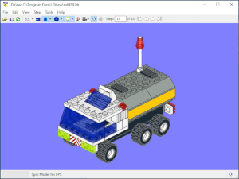

LDView is a real-time 3D viewer for displaying LDraw models using
hardware-accellerated 3D graphics. For information on LDraw, please visit
www.ldraw.org, the centralized LDraw
information site.
The program can read LDraw LDR/DAT files as well as MPD files. It then allows
you to rotate the model around to any angle with the mouse.
Features:
- Ability to examine LDraw models from any angle in real time.
- Able to automatically download the LDraw Parts Library, as well as check
for and download updates to the library.
- Able to automatically download missing unofficial parts for the LDraw.org
Parts Tracker.
- Able to generate a parts list HTML file from your model. (See example
here.)
- Primitive substitution option which produces higher-quality results while
simultaneously improving performance.
- Supports fullscreen rendering at any resolution supported by your monitor
and video card.
- Windows screensaver mode that spins selected models around while moving them
around the screen.
- Cut-away feature that allows you to look inside models.
- Transparent pieces can be displayed using alpha blending.
- Specular highlight option to draw models with a shiny look, so they look
more like real LEGO.
- Ability to use Type 5 line information in LDraw files to smooth shade
curved surfaces.
- High resolution printing support, to print the model using the current
viewing angle.
- Ability to take a PNG, JPG, or BMP snapshot of the model using the current viewing
angle. Supports snapshots up to 9999x9999.
- Ability to export LDraw models into POV-Ray, 3DS, or STL format.
- "Cross-eyed" and "Wall-eyed" stereoscopic support, for those people who can
focus on their monitor while crossing their eyes or staring off into the
distance.
- Native support for Full-Scene Antialiasing on video cards that support this
via an OpenGL extension.
- Lots of other options, to give you control over how the rendering
looks.
Some things to note:
- Large models can take relatively long to load, and use a fair amount of
memory. (However, the 10300 Imperial Star Destroyer set, one of the
largest sets ever produced by LEGO, can be loaded in under 70MB.)
- While you can sort transparent pieces, this doesn't work correctly 100%
of the time. This can cause pieces a long ways away to appear "on top" of
closer pieces in some instances.
- Colors which are not recognized are drawn in orange. It should however
recognize all of the standard colors, as well as those used by LDLite and
MLCad, plus all the colors defined in LDConfig.ldr, unless that option is
disabled.
- Read the Help.html file for more information, and instructions on how to
use the program.


If you have any comments, questions, or suggestions, please e-mail me at
ldview@gmail.com.
LDView and this web page are both Copyright © 2018 Travis Cobbs and
Peter Bartfai.
LEGO® and the LEGO logo are registered trademarks of The Lego Group, which
does not sponsor, endorse, or authorize this site. You can find the official
LEGO website at http://www.lego.com.
 Downloads
Downloads